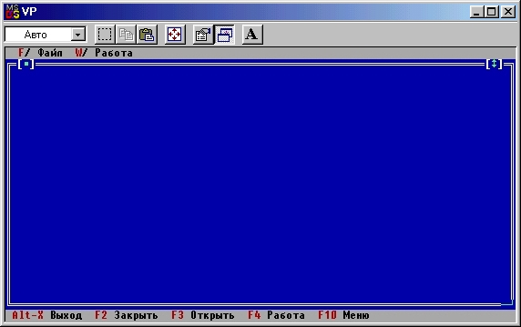
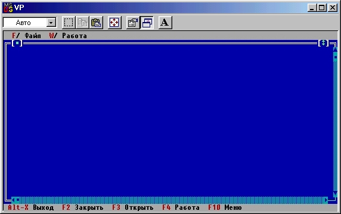

|
|
|
|
Создание и использование групп
Пора заняться основной содержательной частью нашей программы - процедурой Work. Прежде всего следует продумать способ взаимодействия пользователя с данными (интерфейс пользователя). От удачного выбора интерфейса во многом зависит успех разработки диалоговых программ: неудобный способ доступа, связанный с необходимостью ввода каких-либо команд или ответов на многочисленные вопросы, надолго отобьет у пользователя всякое желание работать с программой. Turbo Vision предоставляет в Ваше распоряжение все необходимые средства для разработки современного объектно-ориентированного диалога. В ходе такого диалога пользователь видит на экране объекты, о которых идет речь, он может указать на любой объект и выбрать те действия, которые нужно осуществить над ним.
При работе с электронной записной книжкой хотелось бы, чтобы на экране появилось сразу несколько записей, отсортированных в алфавитном порядке. Пользователь должен иметь возможность «листать» книжку, отыскивать в ней нужную запись, добавлять новые и исключать ненужные записи, редактировать их (вносить изменения). Таким образом, ядром диалога должно стать окно с текстом. При необходимости пользователь может смещать текст в окне в ту или иную сторону, перемещать само окно относительно границ экрана, менять его размеры. Все эти возможности типичны для многочисленных текстовых редакторов, систем программирования, систем управления базами данных и т.п.
Для реализации этих действий в Turbo Vision предусмотрен специальный объект TWindow, экземпляры которого отображаются на экране в виде прямоугольного окна с рамкой и стандартными кнопками изменения размера и закрытия окна. Попробуем создать такое окно в нашей программе. Для этого изменим текст процедуры Work следующим образом:
Procedure TNotebook.Work;
{Работа с данными}
var
R: TRect;
begin
R.Assign(0,0,80,23);
Desktop.Insert(New(PWindow,Init(R,'',0)))
end; {Work}
После запуска программы нажмите клавишу F3, укажите в диалоговом окне имя несуществующего файла (файл данных пока еще не создан), нажмите клавиши Enter и F4 - экран приобретет вид, показанный на рис. 15.4.
Если Ваш ПК оснащен устройством ввода типа мышь, Вы можете перемещать это окно по экрану (надо «схватить» мышью верхнюю рамку окна, т.е. подвести к ней указатель мыши, нажать левую кнопку и, удерживая кнопку нажатой, перемещать мышь), изменять его размеры («схватить» правый нижний угол), использовать стандартные кнопки изменения размера (справа на верхней рамке) и закрытия окна (слева). Ничего другого окно не умеет. А как загрузить в него текст? Как получить хорошо знакомые по среде Турбо Паскаль полосы-указатели и управлять с их помощью положением текста? Для этих целей можно было бы использовать объект TScroller, представляющий собой окно с текстом и с двумя полосами-указателями. Однако по умолчанию такое окно не имеет рамки, а потому не может изменять своего размера, в нем нет стандартных кнопок изменения размера и закрытия окна. Таким образом, и объект TScroller не решает всех проблем. Каков же выход? Нужно создать новый объект, объединяющий в себе свойства и TWindow, и TScroller! В терминах Turbo Vision такие составные объекты называются группами.

Рис. 15.4. Окно просмотра данных
Введем в программу следующий объект:
type
PWorkWin =TWorkWin;
TWorkWin = object (TWindow)
Constructor Init(Bounds: TRect);
end;
Новый объект является потомком TWindow и, следовательно, наследует все свойства родителя, в том числе рамку и способность перемещения по экрану. Дополнительные свойства ему должен придать новый конструктор TWorkWin.Init, которому мы в качестве параметра передаем начальное положение и размеры создаваемого окна:
Constructor TWorkWin.Init(Bounds: TRect);
{Создание окна данных}
var
HS,VS: PScrollBar; {Полосы-указатели}
Interior: PScroller; {Указатель на управляемое текстовое окно}
begin
TWindow.Init(Bounds,'',0); {Создаем новое окно с рамкой}
GetClipRect(Bounds){Получаем в BOUNDS координаты минимальной перерисовываемой части окна}
Bounds.Grow(-1,-1){Устанавливаем размеры окна с текстом}
{Включаем стандартные по размеру и положению полосы-указатели:}
VS := StandardScrollBar(sbVertical+sbHandleKeyBoard);
HS := StandardScrollBar(sbHorizontal+sbHandleKeyBoard);
{Создаем текстовое окно:}
Interior := New(PScroller,Init(Bounds, HS, VS));
Insert(Interior) {Включаем его в основное окно}
end; {TWorkWin.Init}
С помощью вызова процедуры GetClipRect мы получаем размеры минимального прямоугольника, который следует обновлять при любых перемещениях окна или изменениях его размера. Такой вызов позволяет до минимума сократить время вывода. Процедура Bounds.Grow изменяет вертикальный и горизонтальный размеры прямоугольника Bounds: при положительном параметре соответствующий размер увеличивается, при отрицательном - уменьшается. Параметры -1,-1 учитывают рамку основного окна. Функция StandardScrollBar создает указатель на управляющую полосу стандартного размера. При обращении к ней параметр sbVertical (sbHorizontal) определяет положение полосы, а параметр sbHandleKeyboard разрешает использование клавиатуры для управления ею (если этот параметр не включить, полоса будет управляться только с помощью мыши). Наконец, процедура Insert включает вновь созданное окно TScrollBar в основное окно TWindow, так что теперь оба окна будут функционировать как одно целое.
Для создания группы необходимо в объект-потомок от TGroup (обычно - это объект TWindow или потомок от него) вставлять нужные элементы с помощью метода Insert.
Осталось лишь нужным образом изменить процедуру Work:
Procedure TNotebook.Work;
{Работа с данными}
var
R: TRect;
PW: PWorkWin;
begin
R.Assign(0,0,80,23) ;
PW := New(PWorkWin, Init(R));
DeskTop.Insert(PW)
end; {Work}
Если исполнить подготовленную таким образом программу, на экране появится изображение, показанное на рис. 15.5.

Рис.15.5. Окно с полосами прокрутки
|
|
|
|